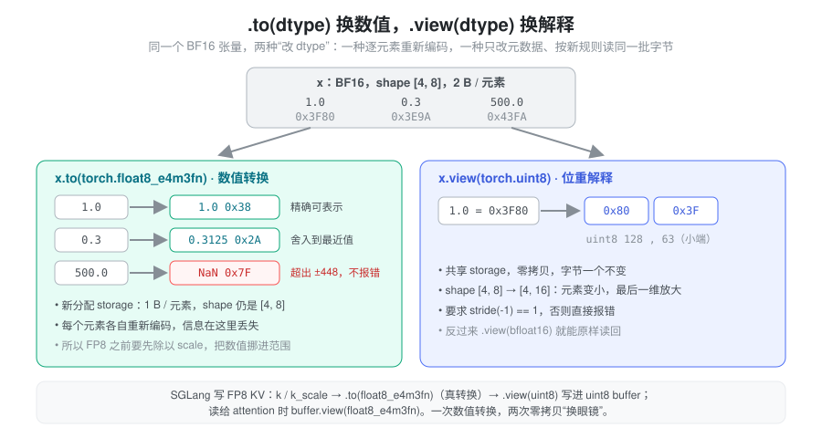
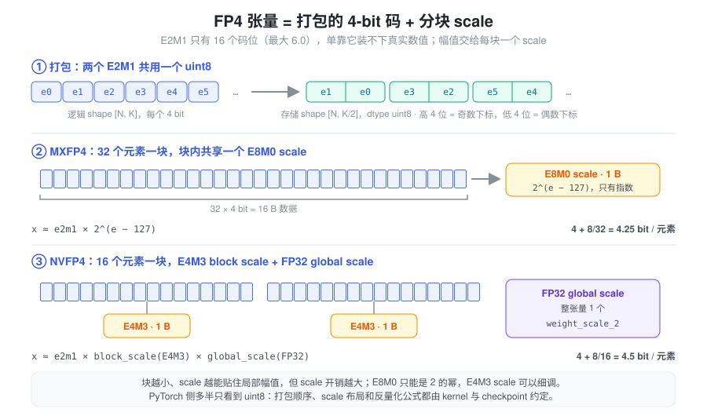

- 开了
--kv-cache-dtype fp8_e4m3，为什么 KV pool 里的k_buffer打印出来是torch.uint8？ - NVFP4 权重的 shape 为什么是
[N, K/2]，旁边还多了weight_scale、weight_scale_2两个参数？ .to(torch.float8_e4m3fn)和.view(torch.float8_e4m3fn)只差一个方法名，结果却完全不同？
LLM 推理里，dtype 首先是一笔账：decode 阶段基本受显存带宽限制，每个元素少一个字节，KV cache 就能多放一倍 token，每步要读的字节也少一半。所以工程上会把 KV 和权重一路压到 FP8、FP4。但字节数一少，问题随之而来：8 bit 甚至 4 bit 本身装不下真实数值的范围，必须额外携带 scale；而 PyTorch 的 dtype 体系对这些格式只部分支持，很多算子不能直接在上面运行，推理引擎只好把它们当成“字节”存下来，再自己约定怎么解释。
本篇讨论的是 dtype 作为存储表示的一面：每个元素占几个 bit、这些 bit 怎么解释、低精度张量为什么要连同 scale 一起看。格式的范围与尾数精度、类型提升细则、累加精度见 dtype 与数值精度；量化算法与粒度见 Quantization。
抽象：dtype = 位宽 + 解释规则
一个张量的 dtype 同时规定了两件事：
- 位宽：每个元素在 storage 里占多少
bit，
x.element_size()返回字节数。它决定显存容量和带宽账。 - 解释规则：同样 8 个 bit，按
uint8读是整数 56，按float8_e4m3fn读是 1.0。它决定这些 bit 代表什么数值。
把两件事分开，“改 dtype”就有了两种完全不同的含义：改写
bit 让它在新规则下表示近似相同的数值，或者
bit 一个不动、只换一套解释规则。前者是
.to(dtype)，后者是
.view(dtype)。
到了 FP8/FP4，又多出第三件事：数值还依赖 dtype
之外的元数据。一个 FP8 张量的真实值是
fp8_value × scale，scale 不在 dtype
里，而是另一个张量或 Python
浮点数。读低精度代码时，“这个张量是什么
dtype”远远不够，还要问“它的 scale
在哪里、按什么粒度、谁负责乘回去”。
.to(dtype)
与 .view(dtype)：换数值，还是换眼镜

.to(dtype)
是数值转换：逐元素按新格式重新编码，通常分配新
storage；精度不够的地方舍入，超出范围的地方变成
inf/NaN
或被截断，取决于目标格式和实现。.view(dtype)
是位重解释：不碰任何字节，只改张量元数据里的
dtype。元素大小不同时，最后一维按字节比例伸缩，因此要求
stride(-1) == 1（否则报错），这和 张量内存 里 view
的判据一致——能只改元数据表达，才是 view。
x = torch.tensor([1.0, 0.3, 500.0], dtype=torch.bfloat16)
y = x.to(torch.float8_e4m3fn) # 数值转换：新 storage，element_size() == 1
y.float() # tensor([1.0000, 0.3125, nan]) 500 超出 E4M3 的 ±448
b = x.view(torch.uint8) # 位重解释：共享 storage，shape [3] -> [6]
b # tensor([128, 63, 154, 62, 250, 67])，即 0x3F80 等的小端字节两个值得记住的细节：
- 超出范围的转换不报错。 上例
500.0在float8_e4m3fn下变成NaN（这个格式没有inf，最大有限值 448，见torch.finfo）。这正是 FP8 必须配 scale 的原因：先除以 scale 把数值挪进可表示范围，再转换。 .view(dtype)是低精度工程的胶水。 打包格式、index_put支持不全的 dtype、要交给只认int8/uint8指针的 kernel 的数据，都靠它在“字节”和“有语义的数值”之间零拷贝切换。它从不改变数值，也就从不修正数值；拿错规则 view，得到的只是另一串合法但无意义的数。
字节账：KV cache 容量与 decode 带宽
对于逐 token 存放的 MHA/GQA KV cache，每个 token 的大小是：
\text{bytes/token} = 2 \times L \times H_{kv} \times d_{head} \times \text{bytes/elem}
以
L=32、H_kv=8、d_head=128
的模型为例，每个 token 有 65536 个 K/V 元素：
| KV 存储格式 | 每元素 | 每 token | 相对 BF16 |
|---|---|---|---|
| BF16 | 2 B | 128 KiB | 1× |
| FP8（per-tensor scale） | 1 B | 64 KiB | 2× token |
| FP4 + 每 16 元素 1 B scale | 0.5625 B | 36 KiB | ≈3.6× token |
同一块显存能装下的 token 数随之放大；decode 每步要从 HBM 读出的 KV 字节也按同样比例减少。这就是 KV 量化的全部收益来源，也提醒两件事：scale 本身要计入账本（块越小开销越大）；如果读取路径先把 FP4 反量化成 BF16 张量再算 attention，带宽收益会在这一步部分还回去。容量如何从显存余量换算成 token 数见 Memory Pool，带宽与算力的关系见 Roofline。
存储精度不是计算精度
dtype 描述的是存储。FP8/FP4 张量几乎从不以“FP8 累加”的方式参与计算：典型路径是 Tensor Core 读低精度输入、在 FP32 中累加、乘回 scale 后输出 BF16；或者先反量化成 BF16 再走普通 kernel。同一个 FP8 KV cache，换一个 attention 后端，计算精度就可能不同。三种精度的区分与验证方法见 dtype 与数值精度。
类型提升：高精度这边很宽松，低精度这边很严格
高精度 dtype 之间，PyTorch
会静默做类型提升：bf16_tensor + fp32_tensor
的结果是 FP32，后面一串算子随之在 FP32
上运行，显存与带宽翻倍却不会有任何提示。这是推理代码里最常见的隐式转换，排查方法是在
residual、mask、辅助张量创建处检查输出 dtype 或用
torch.result_type() 预判（规则细节见 dtype
与数值精度）。
到了 FP8，方向反过来：它们不参与类型提升，大部分普通算子也没有实现。
y = torch.zeros(4).to(torch.float8_e4m3fn)
y + 1.0 # RuntimeError: "add_stub" not implemented for 'Float8_e4m3fn'
y + torch.zeros(4) # RuntimeError: Promotion for Float8 Types is not supported这不是缺陷，而是设计立场：FP8 张量被当作只供专用
kernel 消费的存储格式，而不是普通的数值类型。要在
PyTorch 里对它做逐元素运算，必须显式
.to(torch.bfloat16)（并记得乘回 scale）。FP4
更进一步——torch.float4_e2m1fn_x2
每个元素就是一个打包了两个 FP4
值的字节，element_size() 为
1，几乎只能拿来存储和 view。不同 PyTorch 版本对这些 dtype
的算子覆盖有差异，上面的行为以 2.9 为准。
FP8：低精度数据 + scale
FP8 有两种常用格式，差别只在 8 bit 怎么分给指数和尾数：
| 格式 | 符号/指数/尾数 | 最大有限值 | 特点 |
|---|---|---|---|
float8_e4m3fn |
1 / 4 / 3 | 448 | 尾数多一位，推理权重、激活、KV 常用；无
inf |
float8_e5m2 |
1 / 5 / 2 | 57344 | 范围大、精度更粗，与 FP16 指数位相同 |
448 这个上限说明了一切：激活值、K/V 的幅值随层和通道变化，随便就会越界。所以 FP8 张量的语义永远是一对：
x \approx x_{fp8} \times s, \qquad x_{fp8} = \operatorname{fp8}(x / s)
scale s
可以是整张量一个（per-tensor）、每行一个（per-token /
per-channel）或每个 tile
一个（per-block）——粒度越细，越能贴合局部幅值，scale
的存储与读取开销也越大（粒度对比见 Quantization）。
读代码时要紧盯 scale 的方向约定：多数代码存的是“反量化 scale”，即量化时除以它、反量化时乘以它；但也有实现存倒数。方向弄反不会报错，只会悄悄让数值错一个数量级。
FP4：打包的码 + 分块 scale
FP4（E2M1：1 位符号、2 位指数、1 位尾数）只有 16 个码位，正值是 0、0.5、1、1.5、2、3、4、6。一个 per-tensor scale 根本撑不住这么少的码位——只要张量里有一个离群值，其余元素就全挤在 0 附近。所以 FP4 格式从定义上就是分块缩放（block-scaled）的：每一小段连续元素共享一个 scale，scale 负责“这一块整体有多大”，4-bit 码只负责块内的相对大小。

两个约定要同时记住：
- 打包。 最小寻址单位是字节，所以两个 FP4
码挤进一个
uint8，存储张量最后一维是逻辑维度的一半：逻辑[N, K]的权重在 checkpoint 和显存里是[N, K/2]的uint8。shape 对不上逻辑维度，不是 bug，是格式。 - scale 的格式与块大小。 主流两种：
| 格式 | 块大小 | block scale | 额外 scale | 平均位宽 |
|---|---|---|---|---|
| MXFP4（OCP Microscaling） | 32 | E8M0：只有 8 位指数，值为 2 的幂 | 无 | 4.25 bit |
| NVFP4 | 16 | FP8 E4M3 | 每张量一个 FP32 global scale | 4.5 bit |
E8M0 scale 只能是 2
的幂，乘法退化成指数加法，硬件最便宜，但贴合度粗；NVFP4
用更小的块和带尾数的 E4M3 scale 换精度，而 E4M3
自己范围有限（最大 448），于是再叠一层 FP32 global scale
兜住整体幅值，即
x ≈ e2m1 × block_scale × global_scale。
这类格式在 PyTorch 里几乎没有“原生”语义：码是
uint8，E8M0 scale 常以 uint8
存（偏置 127 的指数，127 表示 1.0），要用时
.view(torch.float8_e8m0fnu) 再转
FP32。真正理解这些字节的是 kernel——打包顺序、scale 的
swizzle 布局、谁来乘回 scale，全部是 checkpoint 与 kernel
之间的约定。
在 SGLang 中：dtype、存储 dtype 与 scale 各在哪里
以下基于 python/sglang/srt/ 当前代码。
KV cache 的 dtype 由一个字符串决定。
--kv-cache-dtype（server_args.py）可选
auto、bf16、fp8_e4m3、fp8_e5m2、mxfp8、nvfp4、fp4_mx_block16
等。mem_cache/kv_cache_dtype.py 的
configure_kv_cache_dtype() 把它解析成 torch
dtype：fp8_e4m3 →
torch.float8_e4m3fn（ROCm 上是
fnuz
变体），nvfp4/fp4_mx_block16 →
torch.float4_e2m1fn_x2（要求 PyTorch
2.8+）；auto 则在模型量化配置声明 FP8 KV 时选
FP8，否则跟随模型 dtype。
逻辑 dtype 与存储 dtype 是两个字段。
KVCache.__init__（mem_cache/memory_pool.py）里，FP8
dtype 的 store_dtype 被设为
torch.uint8，注释写明原因：Tensor.index_put
没有为 float8_e5m2
实现。这就是开头第一个问题的答案。于是
MHATokenToKVPool.set_kv_buffer()
的写路径正好是一次 .to() 加一次
.view()：
if cache_k.dtype != self.dtype: # BF16 进来
if k_scale is not None:
cache_k.div_(k_scale) # 先除以 scale，挪进 FP8 范围
cache_k = cache_k.to(self.dtype) # 数值转换：BF16 -> FP8
if self.store_dtype != self.dtype:
cache_k = cache_k.view(self.store_dtype) # 位重解释：FP8 -> uint8，零拷贝读路径 _get_key_buffer() 再
self.k_buffer[...].view(self.dtype) 换回 FP8
交给 attention 后端。整个过程中 FP8 的字节只被写一次，dtype
却换了三次“眼镜”。
FP8 KV 的 scale 是 per-tensor 的 Python
浮点数。
layers/quantization/kv_cache.py 的
BaseKVCacheMethod 给 attention 层挂
k_scale/v_scale，process_weights_after_loading()
在缺省时回退为 1.0，并明确报错 “Only support per-tensor
scaling factor for fp8 KV cache”；同时生成
k_scale_float/v_scale_float。layers/attention/flashinfer_backend.py
把后者传给 kernel，注释给出了理由：用 Python float
是为了避免 device-to-host 拷贝打断 CUDA Graph capture（见 CUDA Graph）。若 checkpoint
没提供 scale，load_kv_cache_scales() 会告警
“Defaulting to scaling factors of 1.0”——这时 FP8 KV 只靠 448
的范围硬扛。
FP4 KV 多出一份 scale buffer。
MHATokenToKVPoolFP4 的 K/V buffer 是
(slots, heads, head_dim // 2) 的
uint8，旁边另有
k_scale_buffer/v_scale_buffer，形状
(slots, heads * head_dim // 16)。量化与反量化由
layers/quantization/kvfp4_tensor.py
完成：FP4MXBlock16KVQuantizeUtil 是“16 元素块 +
仅指数 scale”的 MX 风格变体（注释特意指出 MXFP4
规范的块大小是 32），NVFP4KVQuantizeUtil 则是
“global FP32 + block FP8 E4M3”
两级缩放。layers/quantization/fp4_kv_cache_quant_method.py
中的
NVFP4KVCacheMethod、FP4MXBlock16KVCacheMethod
把两种 recipe 接到通用 KV pool 上；当
needs_plain_kv_dequant_read()
为真时，读路径先把整层 KV
反量化成普通张量——这正是前文说的“带宽收益在读取时部分还回去”的地方，选择后端时值得留意。
MoE 权重：MXFP4 与 NVFP4 的参数形状就是格式说明书。
layers/quantization/mxfp4.py的Mxfp4MoEMethod创建w13_weight，形状(E, 2·I, hidden // 2)、dtypeuint8；w13_weight_scale形状(E, 2·I, hidden // 32)、同为uint8，初值_UE8M0_ONE = 127（E8M0 下的 1.0）。走 DeepGEMM 时，它把权重.view(torch.int8)，把 scale.view(torch.float8_e8m0fnu).to(torch.float32)——注释说明 2 的幂经 FP32 往返是精确的。layers/quantization/modelopt_quant.py的ModelOptFp4LinearMethod文档串列出了 NVFP4 checkpoint 的三件套：weight为打包uint8、最后一维减半，weight_scale为 FP8-E4M3 的块 scale，weight_scale_2为 FP32 标量 global scale，“per block of 16 elements”；MoE 版本是ModelOptNvFp4FusedMoEMethod。
一张 NVFP4 线性层因此至少对应三个张量、四个 dtype（uint8
码、E4M3 块 scale、FP32 global scale、BF16
激活与输出），这些都不能从 weight.dtype
一眼看出来。
读低精度代码时的检查清单
- 逻辑 dtype 与存储 dtype：这个 buffer
声明的是
uint8，它真正装的是什么格式？ - 打包：最后一维是不是被压了一半？谁负责解包，高低 4 位分别对应哪个下标？
- scale：粒度（per-tensor / per-token / per-block）、存储 dtype、方向（乘还是除）、缺省值是不是 1.0？
.to()还是.view()：这一步是在转换数值，还是只换解释？有没有误把 FP8 当 uint8 做了数值转换？- 计算路径：kernel 直接读低精度，还是先反量化成 BF16 张量？后者会额外占显存和带宽。
小结
dtype 是“位宽 + 解释规则”。.to()
改写字节以保留数值，.view()
保留字节而换掉解释——低精度工程靠前者量化、靠后者在 PyTorch
不支持的格式与 uint8 之间零拷贝穿梭。FP8 和 FP4
的数值从来不只住在 dtype 里：FP8 要配 scale，FP4
还要打包与分块 scale，PyTorch 往往只看到一串
uint8。所以在 SGLang 里读到
store_dtype = torch.uint8、hidden // 2、weight_scale_2
这些看似奇怪的细节时，把它们还原成“码 + scale +
约定”三件事，就能算清容量和带宽账，也能判断精度可能在哪里丢失。